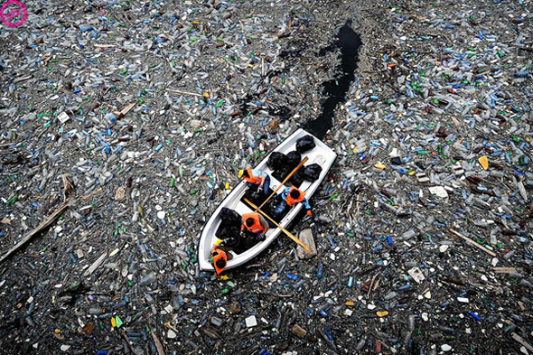

Plastic Pollution
A simple walk on any beach, anywhere, and the plastic waste spectacle is present. All over the world the statistics are ever growing, staggeringly. Tons of plastic debris (which by definition are waste that can vary in size from large containers, fishing nets to microscopic plastic pellets or even particles) is discarded every year, everywhere, polluting lands, rivers, coasts, beaches, and oceans.

Although inhabited and remote, South Sentinel island is covered with plastic! Plastic pollution and marine debris, South Sentinel Island, Bay of Bengal. Photo source: © SAF — Coastal Care
Plastic pollution is the accumulation of plastic objects and particles (e.g.: plastic bottles and much more) in the Earth's environment that adversely affects wildlife, wildlife habitat, and humans. Plastics that act as pollutants are categorized into micro-, meso-, or macro debris, based on size. Plastics are inexpensive and durable, and as a result levels of plastic production by humans are high. However, the chemical structure of most plastics renders them resistant to many natural processes of degradation and as a result they are slow to degrade. Together, these two factors have led to a high prominence of plastic pollution in the environment.
As of 2018, about 380 million tons of plastic is produced worldwide each year. From the 1950s up to 2018, an estimated 6.3 billion tons of plastic has been produced worldwide, of which an estimated 9% has been recycled and another 12% has been incinerated. This large amount of plastic waste enters the environment, with studies suggesting that the bodies of 90% of seabirds contain plastic debris. In some areas there have been significant efforts to reduce the prominence of free range plastic pollution, through reducing plastic consumption, litter cleanup, and promoting plastic recycling.
Some researchers suggest that by 2050 there could be more plastic than fish in the oceans by weight.
Types of plastic debris
There are three major forms of plastic that contribute to plastic pollution: microplastics as well as mega- and macro-plastics. Mega- and micro plastics have accumulated in highest densities in the Northern Hemisphere, concentrated around urban centers and water fronts. Plastic can be found off the coast of some islands because of currents carrying the debris. Both mega- and macro-plastics are found in packaging, footwear, and other domestic items that have been washed off of ships or discarded in landfills. Fishing-related items are more likely to be found around remote islands. These may also be referred to as micro-, meso-, and macro debris.
Krichim, Boat in plastic, April 25, 2009. Photo: Dimitar Dilkoff
Plastic debris is categorized as either primary or secondary. Primary plastics are in their original form when collected. Examples of these would be bottle caps, cigarette butts, and microbeads. Secondary plastics, on the other hand, account for smaller plastics that have resulted from the degradation of primary plastics.
Effects on the environment
The distribution of plastic debris is highly variable as a result of certain factors such as wind and ocean currents, coastline geography, urban areas, and trade routes. Human population in certain areas also plays a large role in this. Plastics are more likely to be found in enclosed regions such as the Caribbean. It serves as a means of distribution of organisms to remote coasts that are not their native environments. This could potentially increase the variability and dispersal of organisms in specific areas that are less biologically diverse. Plastics can also be used as vectors for chemical contaminants such as persistent organic pollutants and heavy metals.
Effects on animals
Plastic pollution has the potential to poison animals, which can then adversely affect human food supplies. Plastic pollution has been described as being highly detrimental to large marine mammals, described in the book Introduction to Marine Biology as posing the "single greatest threat" to them. Some marine species, such as sea turtles, have been found to contain large proportions of plastics in their stomach. When this occurs, the animal typically starves, because the plastic blocks the animal's digestive tract. Sometimes Marine mammals are entangled in plastic products such as nets, which can harm or kill them.